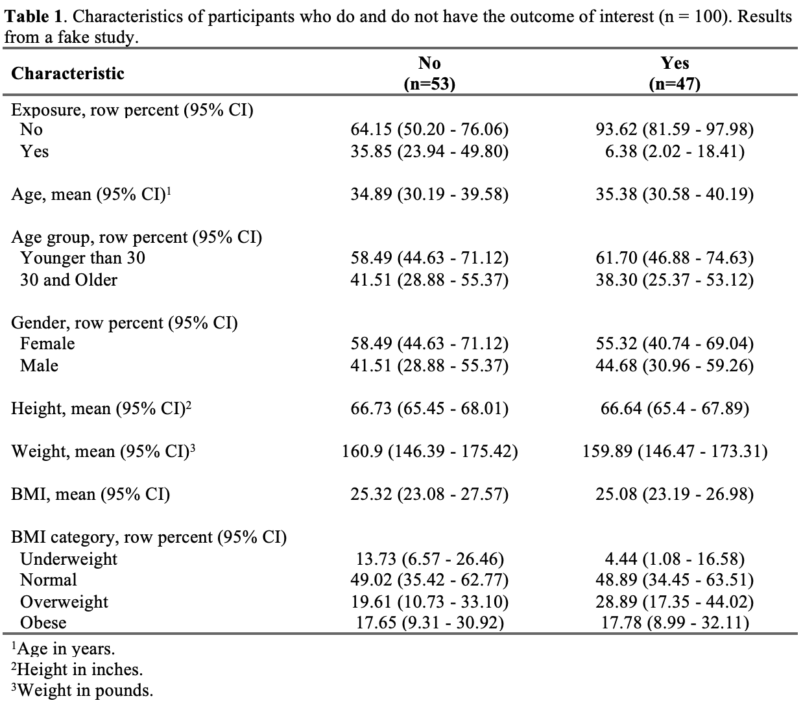

17 Tables
17.1 ⭐️Overview
This chapter is about formatting and presenting statistical results in tables.
The immediate results of statistical analyses are rarely fit for general consumption. This chapter walks through strategies and functions we can use to make our results ready for presentation/dissemination.
Tables are one of the most popular ways to present information to our audience. When our goal is to show our readers precise numerical summaries of our data, the exact values that resulted from our analysis are important.
However, the specific details that we may want to present from table to table, or the way in which we want to present them, can vary widely. For example, an initial table of descriptive information about our participants may or may not be stratified by subgroups of interest. Additionally, it may include variables of different types, and for any given type, it may include various different kinds of numerical summaries. Further, there are numerous types of inferential models that result in numerical summaries that we may want to present in a table. For these reasons, it is difficult to create a good one-size-fits-all approach to automating the process of making results ready for presentation and dissemination.
Having said that, below we walk through some basic strategies for automating the processes of putting results into presentation-ready summary tables – and in a way that makes updating them (which happens A LOT) as painless as possible.
17.2 Projects to review and incorporate
stroke study -> table_characteristics_by_network.Rmd to see an example of doing this with purrr::map. When you have time, you should add an example into this document.
See Sun Study Report Template for a good example of automating this with Officer and Flextable.
I used a little different method in Link2Care > paper_smartphone_app > table_use_app.Rmd. Try to work some of that in below.
/Users/bradcannell/Dropbox/01 Research/Elder Abuse/DETECT NIH RFA-AG-18-010/LEAD Panel/summarise_lead_votes/report_filemaker.Rmd
This chapter also kind of overlaps with the Flexdashboard and Officer chapters. At some point, I should think about the best way to link and organize the chapters. Another option is to put all the flextable stuff in this chapter. I might still want a separate chapter about officer.
17.3 🌎Useful websites
17.4 📦Load packages
library(dplyr, warn.conflicts = FALSE)
library(DT)
library(meantables)
library(freqtables)
library(tidyr)
library(purrr)
library(flextable, warn.conflicts = FALSE)
library(officer)17.5 🔢Simulate data
Have you noticed how we will often calculate the same statistical measures for many different variables in our data? For example, let’s say that we have some pretty standard data about some study participants that looks like this:
study <- tibble(
id = c(1:100),
age = c(32, 30, 32, 29, 24, 38, 25, 24, 48, 29, 22, 29, 24, 28, 24, 25,
25, 22, 25, 24, 25, 24, 23, 24, 31, 24, 29, 24, 22, 23, 26, 23,
24, 25, 24, 33, 27, 25, 26, 26, 26, 26, 26, 27, 24, 43, 25, 24,
27, 28, 29, 24, 26, 28, 25, 24, 26, 24, 26, 31, 24, 26, 31, 34,
26, 25, 27, 40, 35, 43, 81, 18, 79, 45, 37, 66, 35, 81, 50, 54,
24, 47, 84, 38, 23, 74, 77, 65, 46, 55, 41, 84, 41, 29, 60, 60,
40, 53, 31, 77),
age_group = c(2, 2, 2, 1, 1, 2, 1, 1, 2, 1, 1, 1, 1, 1, 1, 1, 1, 1, 1, 1, 1,
1, 1, 1, 2, 1, 1, 1, 1, 1, 1, 1, 1, 1, 1, 2, 1, 1, 1, 1, 1, 1,
1, 1, 1, 2, 1, 1, 1, 1, 1, 1, 1, 1, 1, 1, 1, 1, 1, 2, 1, 1, 2,
2, 1, 1, 1, 2, 2, 2, 2, 1, 2, 2, 2, 2, 2, 2, 2, 2, 1, 2, 2, 2,
1, 2, 2, 2, 2, 2, 2, 2, 2, 1, 2, 2, 2, 2, 2, 2),
gender = c(2, 1, 1, 2, 1, 1, 1, 2, 2, 2, 1, 1, 2, 1, 1, 1, 1, 2, 2, 1, 1,
1, 1, 2, 1, 1, 2, 1, 1, 1, 2, 1, 1, 2, 2, 1, 2, 2, 1, 2, 2, 1,
1, 1, 1, 1, 1, 1, 1, 2, 2, 1, 1, 1, 1, 2, 2, 1, 1, 2, 1, 2, 1,
1, 1, 2, 1, 2, 2, 1, 1, 2, 1, 1, 1, 1, 2, 2, 2, 2, 2, 1, 2, 2,
1, 2, 1, 2, 2, 2, 1, 2, 2, 1, 1, 2, 2, 2, 1, 1),
ht_in = c(70, 63, 62, 67, 67, 58, 64, 69, 65, 68, 63, 68, 69, 66, 67, 65,
64, 75, 67, 63, 60, 67, 64, 73, 62, 69, 67, 62, 68, 66, 66, 62,
64, 68, NA, 68, 70, 68, 68, 66, 71, 61, 62, 64, 64, 63, 67, 66,
69, 76, NA, 63, 64, 65, 65, 71, 66, 65, 65, 71, 64, 71, 60, 62,
61, 69, 66, NA, 73, 71, 72, 76, 74, 63, 65, 65, 73, 76, 66, 58,
65, 65, 65, 68, 71, 68, 60, 70, 68, 62, 74, 68, 76, 72, 59, 76,
61, 72, 69, 59),
wt_lbs = c(216, 106, 145, 195, 143, 125, 138, 140, 158, 167, 145, 297, 146,
125, 111, 125, 130, 182, 170, 121, 98, 150, 132, 250, 137, 124,
186, 148, 134, 155, 122, 142, 110, 132, 188, 176, 188, 166, 136,
147, 178, 125, 102, 140, 139, 60, 147, 147, 141, 232, 186, 212,
110, 110, 115, 154, 140, 150, 130, NA, 171, 156, 92, 122, 102,
163, 141, NA, 106, 118, 205, 229, 198, 255, 268, 203, 269, 162,
115, 106, 139, 246, 147, 206, 202, 209, 123, 265, 119, 171, 195,
136, 208, 108, 201, 224, 261, 169, 295, 93)
) %>%
# Add calculated variables
mutate(
bmi = round(wt_lbs / ht_in^2 * 703, 2),
bmi_4cat = case_when(
is.na(bmi) ~ NA_real_, # Missing
bmi < 18.5 ~ 1, # Underweight
bmi < 25 ~ 2, # Normal weight
bmi < 30 ~ 3, # Overweight
TRUE ~ 4 # Obese
)
) %>%
# Create exposure and outcome where,
# Exposure is more likely in people over age 30 and
# Outcome is more likely in peeople with exposure
mutate(
exposure = if_else(
age_group == 1,
sample(c(0,1), 100, TRUE, c(.9, .1)),
sample(c(0,1), 100, TRUE, c(.7, .3))
),
outcome = if_else(
exposure == 1,
sample(c(0,1), 100, TRUE, c(.8, .2)),
sample(c(0,1), 100, TRUE, c(.5, .5))
)
) %>%
# Make factors
mutate(
age_group = factor(age_group, labels = c("Younger than 30", "30 and Older")),
gender = factor(gender, labels = c("Female", "Male")),
bmi_4cat = factor(bmi_4cat, labels = c("Underweight", "Normal", "Overweight", "Obese")),
exposure = factor(exposure, labels = c("No", "Yes")),
outcome = factor(outcome, labels = c("No", "Yes"))
)datatable(study, options = list(scrollX = TRUE))17.6 🔵 Example: Table 1
This first example is perhaps the most common type of table we will create – a Table 1 – or basic descriptive table about our participants.
Let’s start by looking at a complete example:

Here is the minimum code needed to achieve the result in the screenshot above. Below, we will break this code down step-by-step.
n_outcome <- study %>%
count(outcome) %>%
pull(n) %>%
set_names(levels(study$outcome))cont_stats_fn <- function(.data, .outcome, .pred, .digits = 0) {
.data %>%
# Calculations
group_by({{ .outcome }}) %>%
mean_table({{ .pred }}) %>%
# Format statistics
mean_format("mean (lcl - ucl)", name = "mean_95") %>%
select(var = response_var, group_cat, mean_95) %>%
# Display by group_cat
pivot_wider(
names_from = "group_cat",
values_from = "mean_95"
) %>%
# Add a blank row
add_row(var = "")
}cat_stats_fn <- function(.data, .outcome, .pred, .digits = 0) {
.data %>%
# Remove rows with missing values
filter(!is.na({{ .pred }})) %>%
# Calculations
freq_table({{ .outcome }}, {{ .pred }}) %>%
# Format statistics
freq_format("percent_row (lcl_row - ucl_row)", name = "percent_95", digits = 2) %>%
# Keep columns of interest
select(row_cat, var = col_var, col_cat, percent_95) %>%
# Display by row_cat
pivot_wider(
names_from = "row_cat",
values_from = "percent_95"
) %>%
# Add spaces in front of category labels
mutate(col_cat = paste0(" ", col_cat)) %>%
# Slide category labels under row variable label
add_row(col_cat = !!quo_name(enquo(.pred)), .before = 1) %>%
select(-var, var = col_cat) %>%
# Add a blank row
add_row(var = "")
}cont_cols <- c("age", "ht_in", "wt_lbs", "bmi")cat_cols <- c("age_group", "gender", "bmi_4cat", "exposure")stats_list <- c(
cont_cols %>%
set_names(cont_cols) %>%
map(~ cont_stats_fn(study, outcome, !! sym(.x))),
cat_cols %>%
set_names(cat_cols) %>%
map(~ cat_stats_fn(study, outcome, !! sym(.x)))
)table_1 <- map_dfr(
.x = c("exposure", "age", "age_group", "gender", "ht_in", "wt_lbs", "bmi", "bmi_4cat"),
.f = ~ bind_rows(stats_list[[.x]])
)table_1_ft <- flextable(table_1) %>%
# Change column widths. figure out through trial and error
width(width = c(2.5, 2.01, 2.01)) %>%
# Center the final two columns
align(j = c(2, 3), align = "center", part = "all") %>%
# Change header names -- add subgroup Ns to headers
set_header_labels(
var = "Characteristic",
No = paste0("No\n(n=", n_outcome["No"], ")"),
Yes = paste0("Yes\n(n=", n_outcome["Yes"], ")")
) %>%
# Bold column headers
bold(part = "header") %>%
# Edit row headers
compose(i = ~ var == "exposure", j = 1, as_paragraph("Exposure, row percent (95% CI)")) %>%
compose(i = ~ var == "age", j = 1, as_paragraph("Age, mean (95% CI)")) %>%
compose(i = ~ var == "age_group", j = 1, as_paragraph("Age group, row percent (95% CI)")) %>%
compose(i = ~ var == "gender", j = 1, as_paragraph("Gender, row percent (95% CI)")) %>%
compose(i = ~ var == "ht_in", j = 1, as_paragraph("Height, mean (95% CI)")) %>%
compose(i = ~ var == "wt_lbs", j = 1, as_paragraph("Weight, mean (95% CI)")) %>%
compose(i = ~ var == "bmi", j = 1, as_paragraph("BMI, mean (95% CI)")) %>%
compose(i = ~ var == "bmi_4cat", j = 1, as_paragraph("BMI category, row percent (95% CI)")) %>%
# Add footnotes
footnote(
i = c(5, 15, 17), j = 1,
value = as_paragraph(
c("Age in years.", "Height in inches.", "Weight in pounds.")
)
) %>%
# Remove vertical cell padding
padding(padding.top = 0, padding.bottom = 0, part = "all") %>%
# Change font to TNR 11
font(fontname = "Times New Roman", part = "all") %>%
fontsize(part = "all", size = 11)doc <- read_docx("examples/template_descriptive_analysis.docx") %>%
body_replace_text_at_bkm("date", as.character(Sys.Date())) %>%
body_replace_text_at_bkm("n_table_1", as.character(sum(n_outcome))) %>%
body_replace_flextable_at_bkm("table_1", table_1_ft)print(
doc,
"examples/Example Table 1.docx"
)Link to Word Document on Dropbox
After cleaning your data, which isn’t covered in this chapter, a typical workflow for creating a Table 1 like this may look like the following:
17.6.1 Step 1. Calculate the outcome distribution
As our first step, we typically want to see how many people have each value for the outcome of interest. We will also store these values so that we can add them to our table header as (N = XX) later.
n_outcome <- study %>%
count(outcome) %>%
pull(n) %>%
set_names(levels(study$outcome))
n_outcome## No Yes
## 51 4917.6.2 Step 2. Prepare to calculate summary statistics
17.6.2.1 Calculate statistics for single variables
Eventually, we are going to want to calculate summary statistics for multiple different variables that will go into our Table 1. Before we do that, it can be useful to write code that will calculate the summary statistics we are interested in for one continuous variable and one categorical variable. Later, we can use iterative processing to apply that code to all of the variables we are interested in.
🗒Side Note: This chapter isn’t about how to calculate or interpret all the various different statistics we may want to calculate from project to project. For more details on descriptive statistics see:
17.6.2.1.1 One continuous variable
In this example, we want to calculate the mean and 95% confidence interval for continuous variables. Because this is an example, we will break it down into multiple steps. In a real analysis, we would probably put all of the code in this section into a single code chunk.
Calculations
Do the basic calculations. Here we are using the mean_table() function from the meantables package.
one_cont_var <- study %>%
group_by(outcome) %>%
mean_table(age) %>%
print()## # A tibble: 2 × 11
## response_var group_var group_cat n mean sd sem lcl ucl min
## <chr> <chr> <fct> <int> <dbl> <dbl> <dbl> <dbl> <dbl> <dbl>
## 1 age outcome No 51 34.9 15.2 2.13 30.6 39.2 22
## 2 age outcome Yes 49 35.4 18.2 2.59 30.1 40.6 18
## # … with 1 more variable: max <dbl>Format statistics
Combine the mean and 95% confidence interval into a single variable and keep only the columns of interest for reporting.
Additionally, we no longer need the group_var column and we will rename response_var to var to make it easier to row bind with our categorical variables later.
one_cont_var <- one_cont_var %>%
mean_format("mean (lcl - ucl)", name = "mean_95") %>%
select(var = response_var, group_cat, mean_95) %>%
print()## # A tibble: 2 × 3
## var group_cat mean_95
## <chr> <fct> <chr>
## 1 age No 34.9 (30.62 - 39.18)
## 2 age Yes 35.35 (30.13 - 40.56)Display by group_cat
In the final table, we don’t want the results stacked on top of each other vertically, we want them spread out horizontally across columns – one column for each level (i.e., category) of our outcome variable. We can use pivot_wider() from the tidyr package to do this. See the chapter on restructuring data frames for more info on pivot_wider.
one_cont_var <- one_cont_var %>%
pivot_wider(
names_from = "group_cat",
values_from = "mean_95"
) %>%
print()## # A tibble: 1 × 3
## var No Yes
## <chr> <chr> <chr>
## 1 age 34.9 (30.62 - 39.18) 35.35 (30.13 - 40.56)Add a blank row
Finally, we want to add a blank row to the bottom of our results table. This will create some vertical separation between variables in our table when we eventually row bind all the variables together.
one_cont_var <- one_cont_var %>%
add_row(var = "") %>%
print()## # A tibble: 2 × 3
## var No Yes
## <chr> <chr> <chr>
## 1 "age" 34.9 (30.62 - 39.18) 35.35 (30.13 - 40.56)
## 2 "" <NA> <NA>Putting it all together
And that’s the final result we are looking for. Putting it all together, it looks like this:
one_cont_var <- study %>%
# Calculations
group_by(outcome) %>%
mean_table(age) %>%
# Format statistics
mean_format("mean (lcl - ucl)", name = "mean_95") %>%
select(var = response_var, group_cat, mean_95) %>%
# Display by group_cat
pivot_wider(
names_from = "group_cat",
values_from = "mean_95"
) %>%
# Add a blank row
add_row(var = "") %>%
print()## # A tibble: 2 × 3
## var No Yes
## <chr> <chr> <chr>
## 1 "age" 34.9 (30.62 - 39.18) 35.35 (30.13 - 40.56)
## 2 "" <NA> <NA>Below, we will combine the whole sequence together into a function that we can call repeatedly on each of our continuous variables.
17.6.2.1.2 One categorical variable
In this example, we want to calculate the row percent and 95% confidence interval for categorical variables. Because this is an example, we will break it down into multiple steps. In a real analysis, we would probably put all of the code in this section into a single code chunk.
Calculations
Do the basic calculations. Here we are using the freq_table() function from the freqtables package.
one_cat_var <- study %>%
freq_table(outcome, age_group) %>%
print()## # A tibble: 4 × 17
## row_var row_cat col_var col_cat n n_row n_total percent_total se_total
## <chr> <chr> <chr> <chr> <int> <int> <int> <dbl> <dbl>
## 1 outcome No age_group Younger … 29 51 100 29 4.56
## 2 outcome No age_group 30 and O… 22 51 100 22 4.16
## 3 outcome Yes age_group Younger … 31 49 100 31 4.65
## 4 outcome Yes age_group 30 and O… 18 49 100 18 3.86
## # … with 8 more variables: t_crit_total <dbl>, lcl_total <dbl>,
## # ucl_total <dbl>, percent_row <dbl>, se_row <dbl>, t_crit_row <dbl>,
## # lcl_row <dbl>, ucl_row <dbl>Format statistics
Combine the row percent and 95% confidence interval into a single variable and keep only the columns of interest for reporting.
one_cat_var <- one_cat_var %>%
freq_format("percent_row (lcl_row - ucl_row)", name = "percent_95", digits = 2) %>%
print()## # A tibble: 4 × 18
## row_var row_cat col_var col_cat n n_row n_total percent_total se_total
## <chr> <chr> <chr> <chr> <int> <int> <int> <dbl> <dbl>
## 1 outcome No age_group Younger … 29 51 100 29 4.56
## 2 outcome No age_group 30 and O… 22 51 100 22 4.16
## 3 outcome Yes age_group Younger … 31 49 100 31 4.65
## 4 outcome Yes age_group 30 and O… 18 49 100 18 3.86
## # … with 9 more variables: t_crit_total <dbl>, lcl_total <dbl>,
## # ucl_total <dbl>, percent_row <dbl>, se_row <dbl>, t_crit_row <dbl>,
## # lcl_row <dbl>, ucl_row <dbl>, percent_95 <chr>Keep columns of interest
We only need the values from row_cat, col_var, col_cat, and percent_95 in our final table. Additionally, we will rename col_var to var to make it easier to row bind with our continuous variables later.
one_cat_var <- one_cat_var %>%
select(row_cat, var = col_var, col_cat, percent_95) %>%
print()## # A tibble: 4 × 4
## row_cat var col_cat percent_95
## <chr> <chr> <chr> <chr>
## 1 No age_group Younger than 30 56.86 (42.79 - 69.91)
## 2 No age_group 30 and Older 43.14 (30.09 - 57.21)
## 3 Yes age_group Younger than 30 63.27 (48.74 - 75.73)
## 4 Yes age_group 30 and Older 36.73 (24.27 - 51.26)Display by row_cat
In the final table, we don’t want all of the results stacked on top of each other vertically as it is above. Instead, we want the results spread out horizontally across columns – one column for each level (i.e., category) of our outcome variable. We can use pivot_wider() from the tidyr package to do this. See the chapter on restructuring data frames for more info on pivot_wider.
one_cat_var <- one_cat_var %>%
pivot_wider(
names_from = "row_cat",
values_from = "percent_95"
) %>%
print()## # A tibble: 2 × 4
## var col_cat No Yes
## <chr> <chr> <chr> <chr>
## 1 age_group Younger than 30 56.86 (42.79 - 69.91) 63.27 (48.74 - 75.73)
## 2 age_group 30 and Older 43.14 (30.09 - 57.21) 36.73 (24.27 - 51.26)Add spaces in front of category labels
In our final Word table, we will want our category labels (e.g., “Younger than 30” and “30 and Older”) to be indented slightly relative to the row variable label (e.g., “age_group”). We will go ahead and add 2 spaces now.
🗒Side Note: The spaces won’t be visible while testing in RStudio, but they will show up in the final Word document.
one_cat_var <- one_cat_var %>%
mutate(col_cat = paste0(" ", col_cat)) %>%
print()## # A tibble: 2 × 4
## var col_cat No Yes
## <chr> <chr> <chr> <chr>
## 1 age_group " Younger than 30" 56.86 (42.79 - 69.91) 63.27 (48.74 - 75.73)
## 2 age_group " 30 and Older" 43.14 (30.09 - 57.21) 36.73 (24.27 - 51.26)Slide category labels under row variable label
In our final Word table, we will want our category labels (e.g., “Younger than 30” and “30 and Older”) to be in the same column – and underneath – the row variable label (e.g., “age_group”).
In other words, we want our final table to look like this:
| Characteristic | No | Yes |
|---|---|---|
| Age Group | ||
| Younger than 30 | 56.14 (42.86 - 68.59) | 65.12 (49.54 - 78.02) |
| 30 and Older | 43.86 (31.41 - 57.14) | 34.88 (21.98 - 50.46) |
Instead of this:
| Characteristic | Category | No | Yes |
|---|---|---|---|
| Age Group | Younger than 30 | 56.14 (42.86 - 68.59) | 65.12 (49.54 - 78.02) |
| Age group | 30 and Older | 43.86 (31.41 - 57.14) | 34.88 (21.98 - 50.46) |
To do this, we will:
- Add a new top row to the data frame that will contain the variable label in the current col_cat column.
- Drop the current
varcolumn, which is no longer needed.
- Rename the
col_cattovarto make it easier to row bind with our categorical variables later.
one_cat_var <- one_cat_var %>%
add_row(col_cat = "age_group", .before = 1) %>%
select(-var, var = col_cat) %>%
print()## # A tibble: 3 × 3
## var No Yes
## <chr> <chr> <chr>
## 1 "age_group" <NA> <NA>
## 2 " Younger than 30" 56.86 (42.79 - 69.91) 63.27 (48.74 - 75.73)
## 3 " 30 and Older" 43.14 (30.09 - 57.21) 36.73 (24.27 - 51.26)Add a blank row
Finally, we want to add a blank row to the bottom of our results table. This will create some vertical separation between variables in our table when we eventually row bind all the variables together.
one_cat_var <- one_cat_var %>%
add_row(var = "") %>%
print()## # A tibble: 4 × 3
## var No Yes
## <chr> <chr> <chr>
## 1 "age_group" <NA> <NA>
## 2 " Younger than 30" 56.86 (42.79 - 69.91) 63.27 (48.74 - 75.73)
## 3 " 30 and Older" 43.14 (30.09 - 57.21) 36.73 (24.27 - 51.26)
## 4 "" <NA> <NA>Putting it all together
And that’s the final result we are looking for. Putting it all together, it looks like this:
one_cat_var <- study %>%
# Calculations
freq_table(outcome, age_group) %>%
# Format statistics
freq_format("percent_row (lcl_row - ucl_row)", name = "percent_95", digits = 2) %>%
# Keep columns of interest
select(row_cat, var = col_var, col_cat, percent_95) %>%
# Display by row_cat
pivot_wider(
names_from = "row_cat",
values_from = "percent_95"
) %>%
# Add spaces in front of category labels
mutate(col_cat = paste0(" ", col_cat)) %>%
# Slide category labels under row variable label
add_row(col_cat = "age_group", .before = 1) %>%
select(-var, var = col_cat) %>%
# Add a blank row
add_row(var = "") %>%
print()## # A tibble: 4 × 3
## var No Yes
## <chr> <chr> <chr>
## 1 "age_group" <NA> <NA>
## 2 " Younger than 30" 56.86 (42.79 - 69.91) 63.27 (48.74 - 75.73)
## 3 " 30 and Older" 43.14 (30.09 - 57.21) 36.73 (24.27 - 51.26)
## 4 "" <NA> <NA>Below, we will combine the whole sequence together into a function that we can call repeatedly on each of our continuous variables.
17.6.2.2 Create helper functions
Above, we saw how to calculate the summary statistics we wanted for one continuous variable and one categorical variable. We could repeat that process for each variable we are interested in using copy and paste, but it is much more efficient and much less error prone to wrap those processes in a function that we can call repeatedly on each variable we want to analyze. That’s what we will do in this section.
In each of the code chunks below, all we’re going to do is cut the copy the code from above, paste it below, wrap it in the function() function, and then make a few tweaks that will allow us to repeatedly pass variable names into the code. See the chapter on writing functions for more info on pivot_wider.
17.6.2.2.1 Continuous stats function
cont_stats_fn <- function(.data, .outcome, .pred, .digits = 0) {
.data %>%
# Calculations
group_by({{ .outcome }}) %>%
mean_table({{ .pred }}) %>%
# Format statistics
mean_format("mean (lcl - ucl)", name = "mean_95") %>%
select(var = response_var, group_cat, mean_95) %>%
# Display by group_cat
pivot_wider(
names_from = "group_cat",
values_from = "mean_95"
) %>%
# Add a blank row
add_row(var = "")
}
# For testing
cont_stats_fn(study, outcome, age, .digits = 1)## # A tibble: 2 × 3
## var No Yes
## <chr> <chr> <chr>
## 1 "age" 34.9 (30.62 - 39.18) 35.35 (30.13 - 40.56)
## 2 "" <NA> <NA>17.6.2.2.2 Categoorical stats function
cat_stats_fn <- function(.data, .outcome, .pred, .digits = 0) {
.data %>%
# Remove rows with missing values
filter(!is.na({{ .pred }})) %>%
# Calculations
freq_table({{ .outcome }}, {{ .pred }}) %>%
# Format statistics
freq_format("percent_row (lcl_row - ucl_row)", name = "percent_95", digits = 2) %>%
# Keep columns of interest
select(row_cat, var = col_var, col_cat, percent_95) %>%
# Display by row_cat
pivot_wider(
names_from = "row_cat",
values_from = "percent_95"
) %>%
# Add spaces in front of category labels
mutate(col_cat = paste0(" ", col_cat)) %>%
# Slide category labels under row variable label
add_row(col_cat = !!quo_name(enquo(.pred)), .before = 1) %>%
select(-var, var = col_cat) %>%
# Add a blank row
add_row(var = "")
}
# For testing
cat_stats_fn(study, outcome, bmi_4cat, .digits = 1)## # A tibble: 6 × 3
## var No Yes
## <chr> <chr> <chr>
## 1 "bmi_4cat" <NA> <NA>
## 2 " Underweight" 6.25 (1.98 - 18.07) 12.50 (5.62 - 25.53)
## 3 " Normal" 45.83 (32.12 - 60.21) 52.08 (37.84 - 65.99)
## 4 " Overweight" 22.92 (12.99 - 37.19) 25.00 (14.59 - 39.42)
## 5 " Obese" 25.00 (14.59 - 39.42) 10.42 (4.31 - 23.08)
## 6 "" <NA> <NA>17.6.3 Step 3. Create a data frame that contains our summary statistics
In general, we won’t want to present or distribute summary statistics in the form of an R data frame. However, an preliminary step in creating our final table – regardless of the method we use – will usually be to create an R data frame that contains our summary statistics of interest.
The next step in this proc
cont_cols <- c("age", "ht_in", "wt_lbs", "bmi")cat_cols <- c("age_group", "gender", "bmi_4cat", "exposure")17.6.3.1 Repeatedly apply cont_stats_fn
Calculate summary statistics for each of the continuous variables we are interested in. Each time we pass a new variable to cont_stats_fn the result will be a data frame of summary statistics for that variable. For now, we will save each of those data frames to a list that we can later reorder and row bind together.
stats_list <- cont_cols %>%
set_names(cont_cols) %>%
map(~ cont_stats_fn(study, outcome, !! sym(.x)))17.6.3.2 Repeatedly apply cat_stats_fn
Calculate summary statistics for each of the categorical variables we are interested in. Each time we pass a new variable to cat_stats_fn the result will be a data frame of summary statistics for that variable. For now, we will save each of those data frames to a list that we can later reorder and row bind together.
stats_list <- c(
stats_list,
cat_cols %>%
set_names(cat_cols) %>%
map(~ cat_stats_fn(study, outcome, !! sym(.x)))
)At this point, stats_list contains all of our summary statistics of interest as a list of data frames.
17.6.3.3 Bind together the continuous and categorical summary stats
table_1 <- map_dfr(
.x = c("exposure", "age", "age_group", "gender", "ht_in", "wt_lbs", "bmi", "bmi_4cat"),
.f = ~ bind_rows(stats_list[[.x]])
) %>%
print()## # A tibble: 26 × 3
## var No Yes
## <chr> <chr> <chr>
## 1 "exposure" <NA> <NA>
## 2 " No" 76.47 (62.65 - 86.30) 91.84 (79.81 - 96.97)
## 3 " Yes" 23.53 (13.70 - 37.35) 8.16 (3.03 - 20.19)
## 4 "" <NA> <NA>
## 5 "age" 34.9 (30.62 - 39.18) 35.35 (30.13 - 40.56)
## 6 "" <NA> <NA>
## 7 "age_group" <NA> <NA>
## 8 " Younger than 30" 56.86 (42.79 - 69.91) 63.27 (48.74 - 75.73)
## 9 " 30 and Older" 43.14 (30.09 - 57.21) 36.73 (24.27 - 51.26)
## 10 "" <NA> <NA>
## # … with 16 more rowsRemove the final blank row. It makes the Word table look cleaner.
table_1 <- slice(table_1, -nrow(table_1))🗒Side Note: It might be interesting/worthwhile to come back to this at some point and turn everything from in “Step 3. Create a data frame that contains our summary statistics” into a function.
17.6.4 Step 5. Create flextable
At this point, we have a complete table of summary statistics and it is roughly laid out in the way we want it to be. But, as we discussed above, we don’t want to present or distribute summary statistics in the form of an R data frame. The flextable package is one awesome tool we can use to transform our data frames of summary statistics into presentation-ready tables for Word, PowerPoint, or HTML documents. The flextable chapter gives more details on using the flextable package. But, for the sake of completeness, we will go ahead and finish our formatted Table 1.
Technically, the following single function call will turn our Table 1 into a flextable object.
table_1_ft <- flextable(table_1)
table_1_ftvar | No | Yes |
exposure | ||
No | 76.47 (62.65 - 86.30) | 91.84 (79.81 - 96.97) |
Yes | 23.53 (13.70 - 37.35) | 8.16 (3.03 - 20.19) |
age | 34.9 (30.62 - 39.18) | 35.35 (30.13 - 40.56) |
age_group | ||
Younger than 30 | 56.86 (42.79 - 69.91) | 63.27 (48.74 - 75.73) |
30 and Older | 43.14 (30.09 - 57.21) | 36.73 (24.27 - 51.26) |
gender | ||
Female | 58.82 (44.68 - 71.64) | 55.10 (40.83 - 68.58) |
Male | 41.18 (28.36 - 55.32) | 44.90 (31.42 - 59.17) |
ht_in | 66.88 (65.56 - 68.2) | 66.5 (65.29 - 67.71) |
wt_lbs | 165.44 (151.92 - 178.96) | 155.21 (140.71 - 169.71) |
bmi | 26.03 (23.76 - 28.31) | 24.38 (22.5 - 26.27) |
bmi_4cat | ||
Underweight | 6.25 (1.98 - 18.07) | 12.50 (5.62 - 25.53) |
Normal | 45.83 (32.12 - 60.21) | 52.08 (37.84 - 65.99) |
Overweight | 22.92 (12.99 - 37.19) | 25.00 (14.59 - 39.42) |
Obese | 25.00 (14.59 - 39.42) | 10.42 (4.31 - 23.08) |
17.6.5 Step 6. Formatting flextable
The flextable object we created above is a good start; however, we will still want to do some additional formatting before presenting our final table 1 to others.
🗒Side Note: We could have done some of this formatting directly in the R data frame, but it’s generally a good idea to do formatting in the flextable object when possible.
table_1_ft <- table_1_ft %>%
# Change column widths. figure out through trial and error
width(width = c(2.5, 2.01, 2.01)) %>%
# Center the final two columns
align(j = c(2, 3), align = "center", part = "all") %>%
# Change header names -- add subgroup Ns to headers
set_header_labels(
var = "Characteristic",
No = paste0("No\n(n=", n_outcome["No"], ")"),
Yes = paste0("Yes\n(n=", n_outcome["Yes"], ")")
) %>%
# Bold column headers
bold(part = "header") %>%
# Edit row headers
compose(i = ~ var == "exposure", j = 1, as_paragraph("Exposure, row percent (95% CI)")) %>%
compose(i = ~ var == "age", j = 1, as_paragraph("Age, mean (95% CI)")) %>%
compose(i = ~ var == "age_group", j = 1, as_paragraph("Age group, row percent (95% CI)")) %>%
compose(i = ~ var == "gender", j = 1, as_paragraph("Gender, row percent (95% CI)")) %>%
compose(i = ~ var == "ht_in", j = 1, as_paragraph("Height, mean (95% CI)")) %>%
compose(i = ~ var == "wt_lbs", j = 1, as_paragraph("Weight, mean (95% CI)")) %>%
compose(i = ~ var == "bmi", j = 1, as_paragraph("BMI, mean (95% CI)")) %>%
compose(i = ~ var == "bmi_4cat", j = 1, as_paragraph("BMI category, row percent (95% CI)")) %>%
# Add footnotes
footnote(
i = c(5, 15, 17), j = 1,
value = as_paragraph(
c("Age in years.", "Height in inches.", "Weight in pounds.")
)
) %>%
# Remove vertical cell padding
padding(padding.top = 0, padding.bottom = 0, part = "all") %>%
# Change font to TNR 11
font(fontname = "Times New Roman", part = "all") %>%
fontsize(part = "all", size = 11)
table_1_ftCharacteristic | No | Yes |
Exposure, row percent (95% CI) | ||
No | 76.47 (62.65 - 86.30) | 91.84 (79.81 - 96.97) |
Yes | 23.53 (13.70 - 37.35) | 8.16 (3.03 - 20.19) |
Age, mean (95% CI)1 | 34.9 (30.62 - 39.18) | 35.35 (30.13 - 40.56) |
Age group, row percent (95% CI) | ||
Younger than 30 | 56.86 (42.79 - 69.91) | 63.27 (48.74 - 75.73) |
30 and Older | 43.14 (30.09 - 57.21) | 36.73 (24.27 - 51.26) |
Gender, row percent (95% CI) | ||
Female | 58.82 (44.68 - 71.64) | 55.10 (40.83 - 68.58) |
Male | 41.18 (28.36 - 55.32) | 44.90 (31.42 - 59.17) |
Height, mean (95% CI)2 | 66.88 (65.56 - 68.2) | 66.5 (65.29 - 67.71) |
Weight, mean (95% CI)3 | 165.44 (151.92 - 178.96) | 155.21 (140.71 - 169.71) |
BMI, mean (95% CI) | 26.03 (23.76 - 28.31) | 24.38 (22.5 - 26.27) |
BMI category, row percent (95% CI) | ||
Underweight | 6.25 (1.98 - 18.07) | 12.50 (5.62 - 25.53) |
Normal | 45.83 (32.12 - 60.21) | 52.08 (37.84 - 65.99) |
Overweight | 22.92 (12.99 - 37.19) | 25.00 (14.59 - 39.42) |
Obese | 25.00 (14.59 - 39.42) | 10.42 (4.31 - 23.08) |
1Age in years. | ||
2Height in inches. | ||
3Weight in pounds. | ||
17.6.6 📝 Load Word template for officer
In general, it seems helpful/expedient to do as much of the prose and formatting as possible directly in the Word template. Then, just add numbers, tables, and graphs from R with bookmarks.
doc <- read_docx("examples/template_descriptive_analysis.docx") %>%
body_replace_text_at_bkm("date", as.character(Sys.Date())) %>%
body_replace_text_at_bkm("n_table_1", as.character(sum(n_outcome))) %>%
body_replace_flextable_at_bkm("table_1", table_1_ft)17.6.7 📝 Generate Word reports
print(
doc,
"examples/Example Table 1.docx"
)